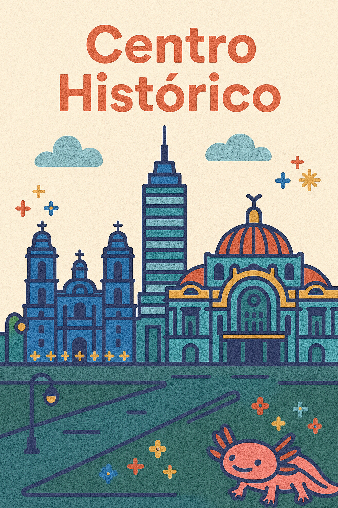

Cabecera

Centro Histórico: donde todo comenzó
Camina entre templos aztecas, palacios coloniales y avenidas cargadas de historia. El Centro Histórico de la CDMX es un viaje en el tiempo: desde la majestuosidad de la Catedral Metropolitana hasta la energía del Zócalo, pasando por museos, mercados y arte urbano.
Nuestros recorridos te muestran lo esencial… y también lo que pocos conocen.
Una experiencia cultural completa en el corazón de México.